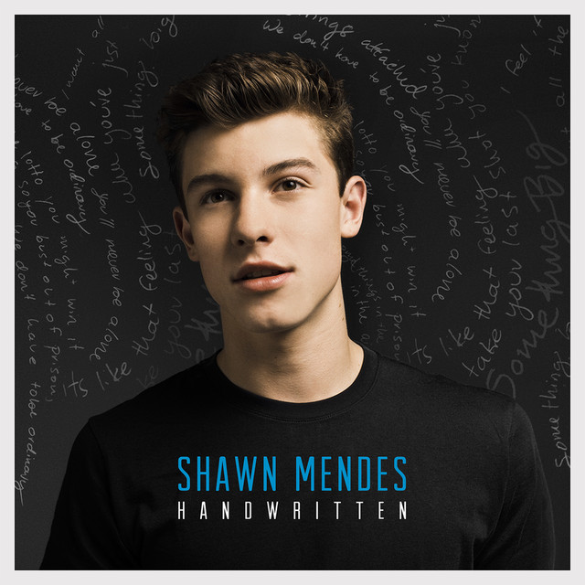
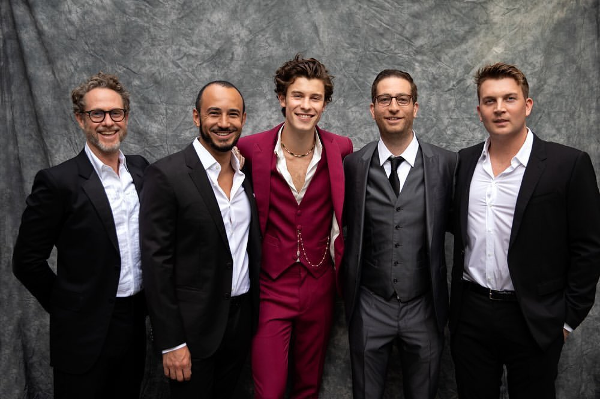
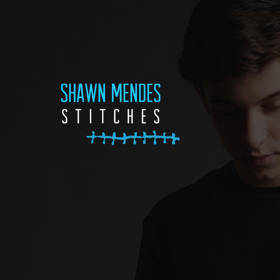
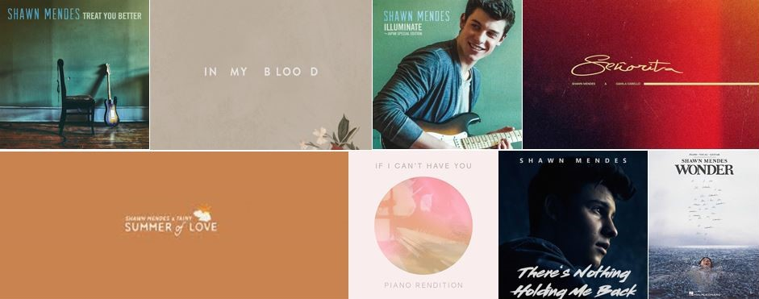

Shawn Peter Raul Mendes born August 8, 1998 is a Canadian singer and songwriter. He gained a following in 2013, posting song covers
on the video-sharing application Vine. The following year, he caught the attention of artist manager Andrew Gertler and Island Records
A&R Ziggy Chareton, which led to him signing a deal with the record label. Mendes's self-titled debut EP was released in 2014, followed
by his debut studio album Handwritten in 2015. Handwritten debuted atop the US Billboard 200, making Mendes one of five artists ever to
debut at number one before the age of 18. The single "Stitches" reached number one in the UK and the top 10 in the US and Canada.



His second studio album Illuminate (2016) also debuted at number one in the US, with its singles "Treat You Better" and
"There's Nothing Holdin' Me Back" reaching the top 10 in several countries. His self-titled third studio album (2018) was supported by
the lead single "In My Blood". The album's number one debut in the US made Mendes the third-youngest artist to achieve three number one albums.
In 2019, he released the hit singles "If I Can't Have You" and "Señorita", with the latter peaking atop the US Billboard Hot 100. His fourth
studio album, Wonder (2020), made Mendes the youngest male artist ever to top the Billboard 200 with four studio albums.

Among his accolades, Mendes has won 13 SOCAN awards, 10 MTV Europe Music Awards,eight Juno Awards, eight iHeartRadio
MMVAs, two American Music Awards, and received three nominations for a Grammy Award and one nomination for
a Brit Award. In 2018,Time named Mendes as one of the 100 most influential people in the world on their annual list.
Developed and designed by : Vibhor Gupta